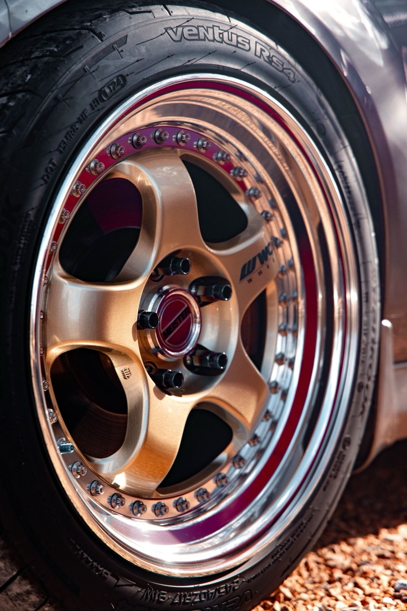
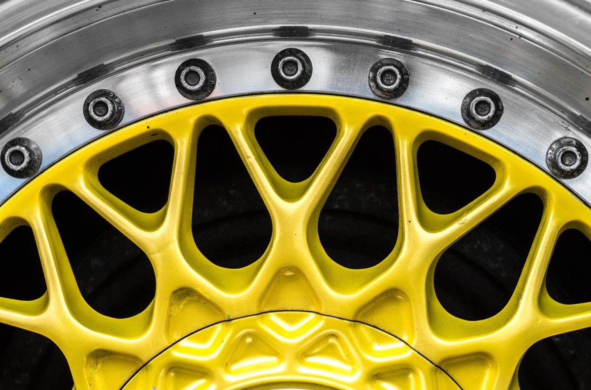

Offset and Backspacing: One Number Describes the Other
Offset and backspacing describe the same thing from two different starting points, which means a listing that publishes both can be checked against itself. Most shoppers treat them as two specs to memorize. They are one spec stated twice, and the arithmetic connecting them is simple enough to do on
Offset and backspacing are the same measurement from two different zero points, so a listing that gives both is self-checking. Backspacing = (width + 1) ÷ 2 + offset ÷ 25.4. Verified against five real wheels from 6.5 to 9 inches wide, it lands within 0.04 in. every time.
A 6.5-inch-wide wheel carries a +40 mm offset and a 9-inch-wide wheel carries +12 mm, and the narrower wheel still has the shallower backspace — 5.33 in. against 5.47 in. A big positive offset number does not mean a wheel sits further in; the width moves the zero point.
Offset and backspacing describe the same thing from two different starting points, which means a listing that publishes both can be checked against itself. Most shoppers treat them as two specs to memorize. They are one spec stated twice, and the arithmetic connecting them is simple enough to do on a phone in the aisle.
Every figure below was read from the product spec block on 18 November 2026.
The formula
Backspacing = (wheel width + 1) ÷ 2 + (offset ÷ 25.4)
Width is in inches, offset is in millimetres, and the answer is in inches. The
+ 1 is the bead flange — the lip that holds the tire on — which is about half
an inch on each side, so it adds a full inch to the width you measure between.
Here it is against five wheels, with the arithmetic shown:
| Wheel | Width | Offset | Calculated | Listed backspace |
|---|---|---|---|---|
| Vision SW60 | 6.50 in. | +40 mm | 5.32 in. | 5.33 in. |
| Method MR305 | 8.50 in. | +25 mm | 5.73 in. | 5.70 in. |
| Black Rhino Tembo | 9.00 in. | +12 mm | 5.47 in. | 5.47 in. |
| Moto Metal MO970 | 9.00 in. | +18 mm | 5.71 in. | 5.71 in. |
| Fuel Vapor D560 | 9.00 in. | +20 mm | 5.79 in. | 5.75 in. |
Worst case is 0.04 in. — a millimetre. The relationship holds.
What each one actually measures
Offset is the distance from the wheel’s centre line to its mounting face. Positive offset means the mounting face is outboard of centre, so the wheel sits further in toward the truck. Negative offset puts the mounting face inboard of centre and pushes the wheel out. It is measured in millimetres because that is the unit the industry settled on.
Backspacing is the distance from the inner edge of the wheel to the mounting face. It is measured in inches, from a hard edge you can put a straightedge against, which is why it is the number that answers “will this hit my suspension.”
Offset’s zero point is the wheel’s centre line, which moves when the width changes. Backspacing’s zero point is the wheel’s inner lip, which is a physical edge. That difference is why the same backspace can appear on wheels with very different offsets.

The counterintuitive part
The Vision SW60 is 6.5 inches wide with a +40 mm offset, and its backspace is 5.33 in.
The Black Rhino Tembo is 9 inches wide with a +12 mm offset, and its backspace is 5.47 in.
The Vision has more than three times the positive offset, and the shallower backspace. A +40 mm offset sounds like it pulls the wheel deep into the wheelwell. On a narrow wheel, it does not — half the width is only 3.25 in., so even 40 mm (1.57 in.) of offset only brings the back edge to 5.33 in.
Widen the wheel by 2.5 inches and the centre line moves outward by 1.25 in. all by itself, which eats most of the difference before offset is even considered.
So: a big positive offset number does not mean a wheel sits further in. The width moves the zero point, and width is the bigger lever of the two.

Why backspacing is the number to check first
Clearance problems are almost always at the inside of the wheel — the upper control arm, the steering knuckle, the inner fender, the brake caliper. That is exactly what backspacing measures, directly, with no conversion.
If you know your current wheel’s backspace and you want the new one to sit the same way relative to the suspension, match that number. If you are changing width, the offset has to move to keep backspace constant — and that is what the formula tells you.
Two worked examples from the table:
- Going from the 9-inch Tembo at +12 mm (5.47 in.) to a wider or narrower wheel at the same backspace requires recalculating the offset, not copying it.
- The Fuel D560 at 9 inches and +20 mm has 0.28 in. more backspace than the Tembo at 9 inches and +12 mm. Same width, so the whole difference is the 8 mm of offset — which is 0.31 in., and the 0.03 in. gap is rounding in the published figures.
The other numbers on the same spec row
Four more figures sit beside offset and backspacing, and two of them decide whether the wheel goes on at all:
Bolt pattern. Read as a count and a circle diameter. The wheels here run
6 x 135mm, 6 x 139.70mm, 8 x 165.10mm and 8 x 180mm — all truck
patterns, none interchangeable. The listing shows both metric and inch forms
where they differ; 6 x 139.70mm is the same as 6 x 5.5 in.
Center bore. The hole in the middle that sits over the hub. These five range from 57.10 mm on the Vision to 125.10 mm on the Moto Metal — a 68 mm spread that no title or price reveals. A bore larger than your hub is usually corrected with a hub-centric ring; a bore smaller than your hub means the wheel will not seat at all.
Load rating. Published per wheel, and it varies more than people expect: 1,520 lbs. on the Vision steel wheel against 3,700 lbs. on the Fuel D560. On a truck that carries or tows, this is a specification rather than a footnote.
Wheel weight. Given on some listings and not others. The Vision shows 12.9 lbs. and the Black Rhino 33.2 lbs. — but those are a 16x6.5 steel wheel and an 18x9 aluminum one, so the gap is size and material, not quality.
Using the formula on a listing that looks wrong
This is the practical use, and it is the reason the relationship matters.
A listing that publishes width, offset and backspacing has published the same information twice. Run the formula. If the calculated backspace is more than about 0.1 in. off the listed figure, one of the three numbers on that page is wrong, and you cannot tell which from the page. That is a listing to verify with the manufacturer before you spend $400 on a wheel.
An exact match is not required — published figures are rounded, which is why four of the five above sit within 0.04 in. rather than at zero. A number that is out by half an inch is not rounding.
What offset changes once the wheel is on
Offset does more than decide clearance, and this is the part most buyers meet after the fact.
It sets the scrub radius — the distance between where the tire’s contact patch centre sits and where the steering axis meets the ground. Move the wheel outboard with a lower offset and that distance grows. The practical results are heavier steering effort at low speed, more kickback through the wheel over bumps, and more load on the wheel bearings because the load is applied further out along the hub.
None of that is visible in a photo of the truck sitting still, which is why offset gets bought on looks and lived with afterwards.
The lift interaction worth knowing
On a lifted truck, backspacing and clearance interact, because lifting changes where the suspension sits through its travel. A wheel that clears at ride height can contact an upper control arm at full droop.
The wheels above range from 5.33 in. to 5.79 in. of backspace, and that 0.46 in. band is narrow in the context of a lift. If you are choosing wheels and a lift together, the backspace is the figure to confirm against the lift manufacturer’s own clearance guidance rather than against the original wheel.
Does any of this touch California emissions law?
No. Wheels are not emissions equipment, there is no CARB Executive Order to check, and wheel specification has no bearing on a smog inspection. This is a fitment and handling question.
What I could not verify
- Fitment on any specific vehicle. The applications tables on these listings load separately and I read the specification blocks, not the application lists. Confirm by year, make, model and trim before ordering.
- Whether the flange is exactly 1 inch on every wheel. The formula uses
width + 1, which matched these five wheels to within 0.04 in. Flange thickness varies slightly by construction, so treat a small gap as normal and a large one as a red flag rather than assuming the constant is exact. - The load rating basis. The figures are quoted as published per wheel. I did not verify whether each manufacturer’s rating accounts for dynamic load or a safety factor, and those are not comparable across brands without the manufacturer’s own documentation.
- Prices. I read them but am not quoting them here, because this article is about specification and the prices move. The spec rows are the durable part.
Topics
- Wheels & Tires